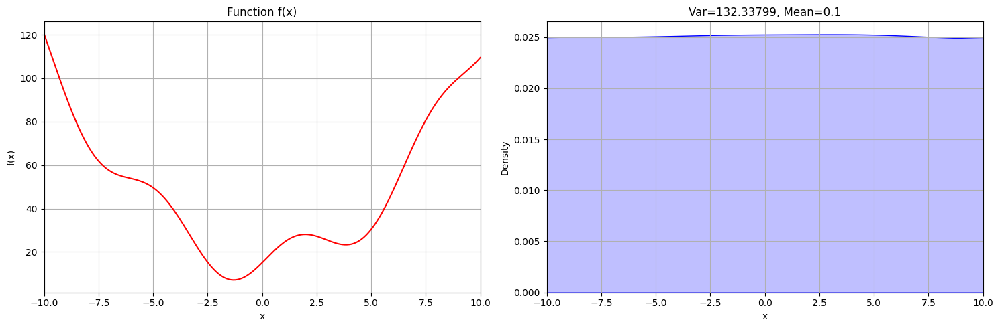
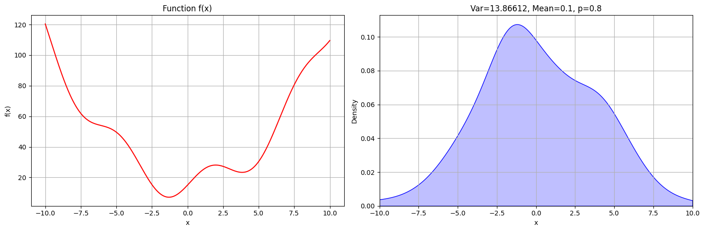

def f(x):
return x**2 + 10 * np.sin(x) + 15Life is full of solving problems. We are constantly searching for solutions, and in Artificial Intelligence there’s a whole subfield about search algorithms. In this article, I want to introduce the algorithm which fascinates me the most.
1 The problem
Search Problems are difficult to solve. But why is that? Essentially, it is because the things we hope to find are a lot less common than the things we do not want to find. Take, for example, a Rubik’s cube: It has 43 quintillion configurations, out of only 1 is the correct one. If we were to approach this problem without a strategy, the chances are 1:43 quintillion of finding the solution every time we make a turn. Entropy can be defined as the number of states that a system can have1. So in the example of the Rubik’s cube, it is low when we only consider a “solved” Rubik’s cube, but high when we consider an “unsolved” Rubik’s cube. Together with the fact that over time, entropy tends to a maximum2, it’s the reason that making random turns on the Rubik’s cube most likely will leave it in a worse state.
1 this definition is simplistic and applies more specifically to the context of statistical mechanics
2 The second law of thermodynamics
It almost seems like most of our real-world problems exist because we want order (low entropy) while the world tends to move toward chaos (high entropy). If we could reverse these laws, even if it’s just for a moment, we could solve so many problems without any effort. If you had a button to inverse Entropy in our example, you could solve the Rubik’s cube by throwing it down the stairs.
Simulated annealing is a search algorithm that was inspired by the annealing process in physics, which in fact leverages Entropy to solve problems. But how does it do it? Increasing Entropy, by its very definition, is just a consequence of probabilities. So to understand the magic, we have to look at the world from a statistical perspective because if we can change the probabilities, we can make Entropy work for - and not against us.
2 Setup
Before we try to understand how simulated annealing works, I want to simplify the problem and the tools we use to make it more approachable. When working with informed search algorithms like simulated annealing, you are working with the algorithm itself, which is a function, and also a heuristic (or cost) function. The cost function tells you how far away from your goal you are - not more, not less. It doesn’t say how to get closer, just how bad the current state is. And because it says how close we are to the goal, minimizing it is our main goal.
Because the Rubik’s cube is such a complicated example, let’s choose a simpler problem for now. Let’s just assume that our cost function3 is defined as follows:
3 This function has been randomly chosen and includes a local and global minimum
\[f(x) = x^{2} + 10 * sin(x)+ 15\]
From now on, we want to minimize the output of this cost function and therefore find a solution for \(x\) that makes \(f(x)\) as small as possible, ideally \(0\). We can plot how our cost function looks like:
3 Building a strategy
3.1 Random
To solve this problem and to understand how simulated annealing does it so well, we should look at it from a statistical perspective. Perhaps the simplest approach to finding a solution is to pick a value randomly. How high would the probability of finding the global minimum at around -1.5 be? We can visualize this strategy using a probability density function (PDF).
def algorithm_a(f, iterations):
x_values = []
y_values = []
for t in range(iterations):
1 x_values.append(random.uniform(-20, 20))
y_values.append(f(x_values[t]))
return x_values, y_values- 1
- At each timestep we just select a random \(x\) for our function

As you can see, all values of x are equally likely to be picked as the solution, which is of course wrong. Ideally, we want our algorithm to find the solution more often than the wrong answers.
3.2 Preference
To find the ideal solution more reliably, we could define our algorithm in a way, that it’s more likely that a cost-improvement will be accepted rather than a regression. The simplest way would be to accept worse solutions only sometimes, say 50% of the time:
def algorithm_b(f, iterations, initial_x):
x_values = [initial_x]
y_values = [f(initial_x)]
for t in range(iterations):
current_x, current_y = x_values[-1], y_values[-1]
new_x = random.uniform(-20, 20)
new_y = f(new_x)
1 if new_y < current_y or random.random() < 0.50:
x_values.append(new_x)
y_values.append(new_y)
return x_values, y_values- 1
- Only accept “worse” solutions 50% of the time
It looks like this strategy helped the algorithm to identify the global minimum more reliably, but it’s still yielding many wrong results.
3.3 Neighbors
The current implementation is inefficient because the progress we made at identifying the best solution will be reset on every time step. Imagine trying to solve a Rubik’s cube, but instead of slowly building up your solution, you choose an entirely new configuration every time you make a turn, instead of improving the current one. So instead of choosing an entirely new solution every time we make a move, let’s only consider neighboring solutions, that is solutions within a certain interval of the current one. Only considering neighboring states is one important concept that simulated annealing employs.
def algorithm_c(f, iterations, initial_x, p):
x_values = [initial_x]
y_values = [f(initial_x)]
for t in range(iterations):
current_x, current_y = x_values[-1], y_values[-1]
1 new_x = current_x + random.uniform(-1, 1)
new_y = f(new_x)
if new_y < current_y or random.random() < p:
x_values.append(new_x)
y_values.append(new_y)
return x_values, y_values- 1
- Only consider neighboring values of the current states by reducing the interval that we sample from to \([-1, 1]\), which are the neighboring states only. If we were to sample from \([-20, 20]\) like before, we’d lose our progress at every step.

As you can see, the probability that the algorithm yields the correct solution is a lot higher than for any other value. But it’s still not guaranteed, and a lot of the time it returns wrong answers. The variance is still too high. Ideally, we’d always want the highest point of the probability density function to be returned as our solution and ignore all the other values. However, we can’t just set the probability of accepting a worse state to 0 because this would lead to the local optimum quite often. Once we’re in the local optimum and don’t accept “worse” states anymore, there’d be no way out. So we have to find another approach to lead us to the global optimum.
How can we solve this? Instead of immediately setting the acceptance probability for worse states to 0%, we could start at 100% and gradually decrease it. Every time we decrease the probability, we become a little more deterministic and in that way we reject bad states more often gradually: At first, we reject the ridiculous states, like configurations of a Rubik’s cube that are completely mixed. After that, we lower the threshold of good states even further, so of all the not-so-bad states, we accept only the better ones.
We can imagine this process like filtering out the best solution gradually. The state space for the Rubik’s cube could be represented in the following image. At a high acceptance-probability, we do the rough work, filtering out all the terrible configurations, resulting in a better subset of configurations. After that, we refine our search, filtering out the even better states from our previous subset. We refine this process even further until we arrive at a 0% acceptance probability for worse states, at which point we just pick the perfect fit.
This process works like a sieve: at each step we increase the quality and build upon our previous work. If we were to keep the acceptance-probability low, we’d have countless hit-or-miss results because we focus in on one particular configuration, before filtering out all the bad states. If we kept it fixed at a high value, we’d never arrive at an excellent solution because we’d never “filter” out the bad states.
From now on, we’ll call this probability of accepting worse states “Temperature” because that’s the term used in the simulated annealing algorithm4. In our code, it’s written as t:
4 Later we’ll expand this definition, but for now, it’s just called the Temperature.
def algorithm_d(f, iterations, initial_x):
x_values = [initial_x]
y_values = [f(initial_x)]
1 t_values = [1]
for k in range(iterations):
current_x, current_y = x_values[-1], y_values[-1]
new_x = current_x + random.uniform(-1, 1)
new_y = f(new_x)
2 if new_y < current_y or random.random() < t_values[-1]:
x_values.append(new_x)
y_values.append(new_y)
3 t_values.append(1 - k / iterations)
return x_values, y_values, t_values- 1
- We start with a temperature of 1 (100% acceptance probability)
- 2
- This change means the same as in our previous algorithms. Because we save the temperatures in an array (for visualization), we want to consider the latest entry.
- 3
- We decrease the temperature linearly
The results of this algorithm look as follows:
We can compare this to the solutions for different temperatures from algorithm_c in Section 3.3 with different fixed temperatures:
Looking at this new PDF, we can notice a couple of things:
- The results in Figure 5 are more reliable than the PDF with a fixed low temperature (0.01)
- The results in Figure 5 are more concrete than the PDF with fixed high temperature (0.9)
Our results are more reliable because we consider a wider array of possibilities than when starting with a really low acceptance probability, which would immediately focus in on a small section of the graph. Using algorithm_c with t=0.01 will lead to the global minimum quite often. But it’s also more concrete than the results we get from using a fixed high temperature. This is because once we reach a low temperature, we focus in on the details, refining our solution.
We can also take a look at how the results from our new algorithm develop over time. The following animation shows the PDF of the values picked by the algorithm in an interval of 10%. As expected, they start out very broad and incorrect, but over time it becomes more narrow and correct.
3.4 Quality
All the strategies we adapted so far lead to some good results. However, dropping the acceptance probability linearly is a simplification and is rarely the case in reality. You could think about what it’s like writing an essay: The outline probably takes less time than all the revisions and details. This is also known as the Pareto Rule (or 80-20 principle) and it shows that to be optimal, we need a more accurate approach for lowering the acceptance probability.
To solve this, we could come up with different temperature schedules, like a geometric decay. However, this doesn’t address the underlying problem and may only work for some cases.
Thus far, our acceptance probability was equal to the temperature when considering “worse” states. That means, that, no matter how bad the new state is, we will always accept it with a fixed probability (given by the current temperature). However, it could be quite efficient to take the quality of this worse state into consideration. For example, when solving a Rubik’s Cube, we prefer “bad” states over “terrible” states. So we should decrease the acceptance probability for states as they approach “terrible”.
The question becomes, how could we express this as a formula? Obviously, we want to integrate \(\Delta Cost\) (the difference between y_old and y_new) into our acceptance probability, as this tells us how “bad” the proposed state is. However, \(\Delta Cost\) can have any value in the range \([0, \inf[\) so to normalize it as a probability, there’s a simple trick. We’ll just plug it into the function \(e^{-x}\).
This normalizes the value of \(\Delta Cost\) to \([0, 1]\) and \(e^{- \Delta Cost}\) can therefore be used as a probability.
The only thing left to do it so integrate the temperature \(T\) into the formula. Just like \(\Delta Cost\), we know that \(T\) can be in the range of \([0, \inf[\), however in contrast to \(\Delta Cost\), a high \(T\) should result in a high acceptance probability. To add \(T\) into the equation, we can divide \(\Delta Cost\) in the exponent by \(T\). This can be expressed as the following formula:
\[ e^{-\frac{\Delta Cost}{T}} \]
Dividing by \(T\) effectively “weakens” the effect of \(\Delta C\) when \(T\) is high, resulting in a high acceptance probability.
3.4.1 Boltzmann distribution
The above explanation serves as an intuitive approach to simulated annealing. If you’re satisfied with this explanation, you can skip this section and jump right to the implementation in Section 3.4.3, if not, here’s my attempt to illustrate it with the theoretical background as well.
Note
To be humble, I am not convinced that my understanding of the Boltzmann Distribution in simulated annealing is sufficient at this point. However, I decided to include this part in the article to encourage feedback and discussions about this concept so that I can ultimately learn and understand it better. My goal is therefore not to provide a perfect answer right now, but to improve this explanation in the future through your participation!
Let’s think about what the acceptance probability is supposed to do: It should tell us how likely the state that we’re observing is getting us closer to the solution. And the solution in our case is the most likely outcome, as we can see in Figure 5. The thing we really want to know to be optimal is, how likely is it that our system is in the state that we’re observing? So if we know how likely a state is, then we know how good, that is how close to the solution it is.
The Boltzmann distribution gives us exactly that: it is a probability distribution that gives the probability that a system will be in a certain state as a function of that state’s energy and the temperature of the system5. It is defined as:
5 Source: Wikipedia
\[ p_i \propto e^{- \frac{\varepsilon_i}{kT}} \]
- \(\varepsilon_i\): Energy at a specific state \(i\)
- in our example “energy” = “cost” = y-value, or as previously defined: \(\Delta E = \Delta Cost\)
- \(T\): Temperature
- \(k\): Boltzmann constant, can be ignored and assumed to be \(1\)
3.4.2 Boltzman factor
This is the entire distribution and ultimately, what we’re interested in. To calculate it, we use the Boltzmann factor, which is defined as:
\[ e^{-\frac{\Delta E}{T}} \]
- \(\Delta E\): Difference in energy between two states
- \(\Delta E =\)
new_y-current_yin our code
- \(\Delta E =\)
So all we have to do now is plugging in the temperature and cost into the equation for the Boltzmann factor and use it as the acceptance probability when evaluating the states. This gives us the simulated annealing algorithm.
3.4.3 Implementation
def simulated_annealing(f, iterations, initial_x):
x_values = [initial_x]
y_values = [f(initial_x)]
t_values = [1]
for k in range(iterations):
current_x, current_y = x_values[-1], y_values[-1]
new_x = current_x + random.uniform(-1, 1)
new_y = f(new_x)
delta_e = new_y - current_y
1 p = exp(-(delta_e)/t_values[-1])
p_values.append(p)
2 if delta_e < 0 or random.random() < p:
x_values.append(new_x)
y_values.append(new_y)
t_values.append(1 - k / iterations)
return x_values, y_values, t_values- 1
- The Boltzmann factor, which is our acceptance probability for states that are worse than the current one
- 2
- We still always accept better states without asking, in the other cases we do so based on the Boltzmann factor. Together, this is called the “Metropolis acceptance criterion”
Running simulated annealing with our example problem yields the following result:
The probability of finding the solution with this approach is very high. It’s almost guaranteed now. By tuning the temperature schedule and running more iterations, these results would become even more apparent. We have therefore found a great solution to the problem.
4 Summary
Leveraging the concepts discussed in this article, simulated annealing can be used not only to find solutions to simple problems as with our function \(f(x)\), but for any search problem, no matter how complex. As long as there’s a cost function and a temperature schedule, simulated annealing is guaranteed to find the optimal solution, given enough time and a temperature schedule that decreases slowly enough.
The concepts in this article have even more depth to them. For example, one could ask: why is the Boltzmann distribution defined the way it is? Or how could one find the optimal temperature for the algorithm? All these are questions that deserve their own time to discuss. This article should just give a well reasoned intuition of why it works at all.